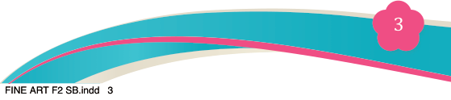
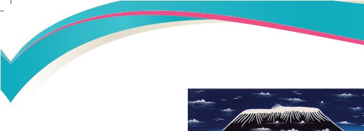
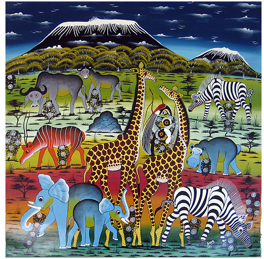
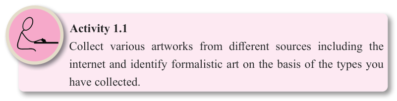

Fine Art for Secondary Schools

3

Student’s Book Form Two



Figure 1.2: Images portraying decorative art
Source: https://commons.wikimedia.org/wiki/File:Amani-TT4798.jpg

(c) Symbolic art: This kind of art uses shape and colour to convey forms without
literal imagery. This art is created specifically for the purpose of communicating
symbolic expressions. Abstract logos are examples of symbolic art. Figure 1.3
shows an example of symbolic art of Air Tanzania and Tanzania health summit.
Figure 1.3: Images portraying symbolic art of air Tanzania and Tanzania health summit

Activity 1.1
Collect various artworks from different sources including the internet and identify formalistic art on the basis of the types you have collected.
04/08/2025 13:54